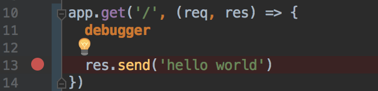

웹스톰(Webstorm)
IDE로 웹스톰을 사용하고 있다. 대단히 만족하는 프로그램 중에 하나로 딱히 세팅할게 없는게 장점 중 하나다. 그런데 디버깅에선 그렇지 않다.
디버깅 세팅
서버리스를 디버깅함에 있어 npm scripts 를 주로 사용하게 되는데 서버리스 오프라인에서는 디버그 모드가 동작하지 않는다. 세팅하기가 귀찮아서 그러려니 하고 살고 있었는데 반복적인 작업을 하게 되어 이 부분을 세팅하고 기록으로 남긴다.
NPM 스크립트
1 | { |
package.json 은 보통 위와 같이 설정한데 풀 스택으로 작업을 할때는 3000 포트가 겹치기 때문에 포트 인자를 줘서 바꾼다.
💁
-p 3001하면this.options.prefix.startsWith is not a function이 따위 에러가 나게 되니 조심하자.-p옵션은 포트가 아닌 프리픽스에 대한 옵션이다.
NPM 스크립트에서는 디버그가 동작하지 않는다.
이 부분이 살짝 놀라웠는데 여튼 안되는거다. npm scripts 대신 직접 환경을 구성해야한다. 구성 자체는 간단하니 따라서 세팅하도록 한다.
디버그 메뉴 진입
메뉴 진입은 우상단의 툴바나 메뉴바에서 찾아 들어가면된다.

설정
메뉴에 진입하면 나오는 화면이다. 왼쪽에서 + 를 눌러 Node.js 를 선택한뒤 이미지와 같이 설정을 해주면된다. 이름은 알아보기 편한 놈으로 정한다.
- Working directory:
package.json이 존재하는 루트 프로젝트에 있으면된다. - JavaScript file: 실행은
serverless를 통해서 진행되므로 이에 대한 경로를 설정하면 된다. 난 로컬 설치를 했기 때문에node_modules/.bin/serverless를 참조한다. 글로벌을 통해서 관리하는 사람은 터미널에서which serverless를 통해 나오는 경로를 넣어주면된다. - Application parameters:
offline이면 충분하다. 포트를 변경하기 위해 난--port 3001을 추가적으로 입력했다.
디버깅
버전업이 되면서 아이콘이 좀 플랫하게 바꼈는데 여튼 맨 오른쪽이 디버그 아이콘이다.

웹에서 디버깅과 마찬가지로 debugger 와 브레이크 포인트가 둘다 작동한다 브레이크 포인트는 CMD + F8 를 통해 라인에 대해서 토글이 가능하다.
HTTP Request
💁웹스톰은 Restful API Client 를 자체적으로 가지고 있지만 개인적으론 불편해서 다른 클라이언트도 잘 안쓴다.
.http파일을 이용하면 편하게 HTTP 요청을 코드로 관리 가 가능하다.
프로젝트(디렉토리) 뷰에 HTTP Request 파일을 추가하자.
그럼 친절하게 스니펫 까지 적힌 파일이 생성된다.
보는 바와 같이 결과도 신택스 하이라이팅을 해준다. ✋